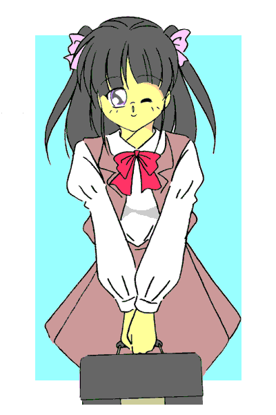

|
「俺は福永瑞貴。ガッツならだれにも負けません」 「萱村覚です。議論はおまかせください」 「林翔策です。自慢は体格と絵です」 「有坂です。工作が得意です。リサって呼んでください」 「俺たち、ろろみさんが安心して学校生活を送れるよう、あなたをお守りしたいんです。そう、守護騎士団っていうのかな」 「みんなありがとう。こちらこそ、よろしくね」 「ろろみさんがそう言ってくれて感激です」 「……まったく、男の子ってこうやって群れるのが好きだよね。ろろみがいいんならいいけれど」 |
| 部屋の目覚し時計が、珍しく朝方に鳴った。眠気を振り切らんとベッドの中で体をねじらせる伸一郎に、枕もとに置かれた大小二つのカバンが、本当の意味での二重生活が幕を開けることを告げていた。 両親にはバイトが昼番だからと言っての、早い外出。慣れない満員の通勤電車に揺られ、いつもの地下鉄駅に着く。計画書店の最寄り駅だ。けれども今日は、そして今日から二年間は、別のところに向かうためにこの駅を使うことになる。 Ｐ伸一郎がいつもの多目的トイレでスプリットすると、ろろみは普段着のトレーナーにデニムパンツ姿。昨日の夜、リンクアップする前に着ていた服装と同じである。 確認しておくと、リンクアップしたときのスプリット体（ろろみ）の服装がペアレント体（Ｐ伸一郎）に記憶され、次にスプリットしたときにはスプリット体はその服装で出現するのだ。 向かって立つＳ伸一郎は落ち着かない様子だ。なにしろ今日は、ろろみの新しい服装を見ることができる日なのだから。Ｓ伸一郎が待ちきれずに大きいほうのカバンのファスナーを引くと、ベージュ色のそれが姿を覗かせた。 「ろろみちゃん、さあさあ早く着替えて」 どうせ着替えないといけないことはわかっている。けれどもやたらと急かせるＳ伸一郎に、ろろみは声を荒立たせた。 「言われなくても着替えるさ。そんなに早く見たかったなら、昨日リンクアップする前に、明日は公園でスプリットしようって言えばよかったんだ」 「でもな、定期がまだだからここまでひとりで来て倹約しようって言ったの、ろろみちゃんのほうだろう」 「あっ、そうか」 今は、Ｓ伸一郎のほうに分があった。 「とにかく着替えるから、早くここから出ろよ」 「わかった。でも、学校じゃそんな言葉遣いはダメだよ、ろろみちゃん」 「わかってるって、さあ」 Ｓ伸一郎をトイレから追い出してひとりになったところで、ろろみは大きく腕を伸ばして深呼吸をする。 実はろろみ自身が、Ｓ伸一郎に負けず劣らず落ち着かなかったのだ。この少女の裸体を見ることにはもう慣れている。そうではなく、学校の制服を着るというのが照れくさいのである。 もとは二十五歳の青年だから、高校卒業まで制服を着ていたとしても七、八年ぶり。照れるのも致し方ないことだ。 おまけに伸一郎の場合はさらに上を行く。学校の制服というものを着た経験が幼稚園のときしかない——そのほかの制服にしてもバイトで着るコンビニの制服くらいだった。小学校は公立で私服。中学高校は私立の男子校だったが、そこは割と自由な校風のため制服がなかった。自主的に学生服を着ていた同級生も何人かいたけれど、伸一郎がその輪に加わるタイプのはずもない。つまり、伸一郎は約二十年ぶりに、実質的には生まれて初めて、制服を着て登校するのである。 ろろみとして編入試験を受けに来たときにも、校内で何人もの生徒とすれ違うたびに、自分もこの服を着るのかと思いつまされた。好奇心もあるけれどもそれ以上に照れくさい、というか恥ずかしい。制服を着て街中を歩くのは頭の上に赤い回転灯を乗せて周囲に警戒色を振りまくようなことだと思えてならなかった。 もちろん伸一郎のまわりには制服のある学校の生徒たちがたくさんいる。彼ら彼女らはああいう服を着てよく平気でいられるのか、必死に我慢しているのか、それとも慣れてしまえばなんとも感じないのか、伸一郎は中学時代からずっと不思議に思い続けていた。その考えは、時には制服への妙な好奇心へと転じることもあった——編集部でろろみの高校編入の話を最初に聞いたとき、どんな制服なのかを声を上ずらせて尋ねてきたＳ伸一郎のように。 伸一郎の両親は学生運動華やかなりし時代に高校生活を送り、制服廃止を叫んでいたという——だからふたりの息子も制服のない学校に進ませたのだろう。伸一郎もそんな両親の心境を、どの程度かはわからないが、自分のものの一部にしていた。 もっとも、もうひとりの伸一郎、トイレの外でろろみの着替えを待っているＳ伸一郎は違う。こうしたＰ伸一郎の過去の想いについての記憶がないらしく——されど制服への好奇心はしっかり受け継いでいるというのが面白いものだ——ろろみの高校編入も所詮は他人事なのだからと、ろろみが制服姿で扉を開けて出てくるのを今か今かと待ち構えているのだ。 そういう伸一郎としての過去はともかく、“水明華高校の生徒・微風ろろみ”となったからには観念しなくてはならない。トレーナーと下のＴシャツ、ボトムのパンツを脱いだろろみは、再度の深呼吸で覚悟を決めてから大きいカバンに手をかけた。 まず取り出したのが純白の丸襟ブラウス。よそいき服のブラウスとは違って無地でフリルなどの飾りもないけれど、それゆえに袖を通そうとするだけで緊張する。 次にえんじ色のリボンを慎重に首へとまわす。結び目がもうできあがっていて、首の後ろでホックで留めるタイプのリボンなのだが、留めてみると首が締められるようにきつい。こんな窮屈なものをつける日々を想像すると、高校編入への後悔の念がちらりと頭をよぎる。けれどもすぐに思い直した。一度外して長さを調整すればよかったのである。するとちょうどいい感じになった。 スカートは無地のベージュ色でボックスプリーツタイプ。上着はファッション誌のモデルでも着た覚えのあるボレロタイプで、ボタンは首もとのひとつだけである。どちらも布地——サージという名前らしい——が堅く、袖を通すと今まで着てきた女ものの服とは重みが大分違うとわかる。伸一郎は一年に数回くらいだが男物のスーツを着ることがあるが、それともまた異なる皮膚感覚だ。否が応にもこれが制服なのかと意識させられる。 ボレロのボタンの上にさっき留めたリボンを出しながら、今まで見ないように努めてきたトイレの中の鏡へとゆっくり目を向ける。そこでろろみは、ただの少女から女子高生に“変身”した自分に文字通り直面させられた。 なんというとんでもない姿に。それが鏡の中のろろみへの第一印象だった。外見に嫌悪感を覚えたのではない。制服姿でもろろみの魅力はいささかも失われていなかった。思わず吸い込まれそうな透明度の高いすまし顔。目と口をにっこりと緩めてみれば、相変わらず弾けるろろみスマイル。そこに、ブレザーやセーラー服タイプとは違った、明るい色調ながらも質素で落ち着いたボレロタイプの制服が加わることにより、少女の幼さとあどけなさが強く醸し出され、ろろみらしさを一層確立させていた。 とんでもない。それは畏怖の心境だった。そして、こんな自分を外に曝すことへの照れくささだった。 ろろみはそれに加えて、学校制服が似合いすぎる自分が悲しくさえ思えてきた。伸一郎が幼稚園以外で着たことがないしもう一生着るはずのないものに、この十六歳の少女はどうしてこんなにもフィットしてしまうのか。 そう考えるとなぜ悲しいのかが見えてくる。なぜ“変身”なのかもわかってくる。ろろみは自覚したのである。ろろみ自身に内在するものが原因で、自分がまたワンステップ、Ｐ伸一郎との距離を広げてしまったことを。リンクアップすれば伸一郎に戻れるとわかっていても、今の自分がこうであることへの慰めにはならないのだ。 ろろみは、テレビや雑誌の撮影で着た衣装にもこんな想いを抱いたことはなかった。アイドル作家といってもマスメディアでは基本的にタレントではなく文化人として扱われる。だから、フリルいっぱいのお姫様ドレスだの、超ハイレグのレオタードだの、いかにも撮影用のサテン地がてかてか光ったセーラー服だのといった、恥ずかしそうな奇抜な衣装を着せられることはなかった。ろろみは基本的に私物の服——もちろんよそいき服だが——でマスメディアに出演していたし、ファッション誌のモデルのときも着た服はオーソドックスなものばかりだった。仮に奇抜な衣装を着せられていたとしても、ろろみ＝伸一郎にはこの学校の制服のほうがよほど恥ずかしく思えたろう。 ふとろろみは現実に返った。待っている人がすぐ外にいる。ここは躊躇せず、女子高生アイドルを演じるしかないのである。 ろろみは洗面所の水で顔を濯ぎ、一昨日買ったばかりのレースのハンカチできれいに水を拭き取り、大小ふたつのカバンを片手に持ちながら、トイレの引き戸にもう片方の手をかけた。 「待たせちゃったね、シン」 溌剌とした声とともに、明るく健康的だが落ち着きのとれた女子高生が現れた。ろろみにはもうさっきの逡巡のかけらもない。 「すごーい！ 思ったとおり似合ってるよ」 Ｓ伸一郎が目をまるくして制服姿をほめた。ろろみの思ったとおり。 「ありがと。素直に受け取っておくね」 今のろろみは、Ｓ伸一郎——そして、かつてのＰ伸一郎——の考えていた理想の女子高生像に最も近い存在なのだから。中身がＰ伸一郎なのだから当然かもしれないが、ろろみはさらに意識してそれを演じるよう心がけていた。 伸一郎は屈み込みながら、なめまわすようにろろみの全身を観察している。制服姿がそれだけ珍しいのだろう。 当然、ろろみは愉快ではなかった。一見して変態のような行為を“伸一郎”がしているのもいい気分ではない。けれども我慢できた。面と向かわないのならば、自分自身を目にすることにも慣れてきていたのだ。せめて今は伸一郎を喜ばせてあげようという、アイドルとしてのサービス精神も働いている。そしてなにより、Ｓ伸一郎の制服への興味の根はさっきのろろみ自身と同じところにあるのだし。 ふたりの横を出勤途中のサラリーマンたちが速足で通り過ぎていく。誰もがちらちらとこちらに目をやるが、慌しい朝ゆえかそれ以上のことをする者はない。 「シン、これくらいにしましょうよ。不審人物って思われちゃうよ」 「そうか。学校の時間だってあるしな……そうだ」 ろろみが足を出口に向けようとすると、伸一郎は慌てたようにろろみと逆方向に走り出す。そして売店で立ち止まる。三十秒後、伸一郎は使い捨てカメラを片手に戻ってきた。 「早く気づけばよかった。……家にマイカメラがないのって悲しいよな」 「なるほど。初登校記念写真ならあたしもほしいもの」 だれが見ているかわからないので、ろろみはスイッチを女言葉に切り替えていた。  階段を上がり地上に出て、通い慣れた計画書店ビルを背にして歩き出す。しばしばビルの谷間で立ち止まる伸一郎から、ろろみは幾度となく使い捨てカメラのフラッシュを浴びせられた。歩いている途中を不意に撮られた写真もあれば、ポーズをとらせられた写真もある。通学カバン——先ほどの小さいほうのカバン——を両手に持たされてみたり、腕時計を見ながら——口にトーストはないけれど——慌ただしく走る姿勢をさせられたり。 「さすがにもう時間ね。急ぎましょ」 「大丈夫。フィルムもうなくなったから」 「それ早すぎ！」 ふたりは、少しだけ歩調を速めながら水明華高校への道を進んだ。 周りを見わたすと、スーツの海の波間から紺のセーラー服や緑のブレザーがときどき浮かび上がってくる。このあたりは都心に近いとはいえもとは文教地区で、ビル街の谷間にいくつも学校があるのだ。 ろろみたちも速足だというのに、右を白襟のセーラー服が、左を派手なチェックのブレザーがすたすたと追い抜いていった。 「それにつけても、いろいろな学校の制服があるよな」 「シンは、この制服どう思う？」 「大好きに決まってるじゃないか。ろろ……キミにすごく似合ってるから」 「そう言うと思ってた。あたしは……地味なデザインなんだけど目立っちゃうところが、正直言って好きとも嫌いともいえないな」 セーラー服はあの襟とラインですぐそれとわかるし、ブレザーの制服は最近ではチェックやらエンブレムやらで派手に飾ったものが多い。それらに比べると、水明華高校のこの制服は、可愛らしいけれど少し主張が弱そうなボレロ。制服としては珍しいタイプだから、その意味では目立つのだけれど。チェック柄やらエンブレムやらといったアクセントがない点ではやっぱり地味といえるが、明るいベージュ色が周囲に強くアピールしている。 ろろみは、そんな制服をまだ持て余していた。 「地味だけど目立っちゃうか。そういうところもキミらしいんじゃないかな」 「……そうかもね」 さっきよりは少し明るい口調で、ろろみは答えた。 |
| 「でもな、正世さん残念だよな、キミの制服姿見られなくて」 今度は伸一郎のほうが口を開いてきた。 本当ならば編入試験のときと同じように、正世がろろみの初登校に付き添ってもよかったはずだ。けれども別冊誌の締め切りが今日の正午に控えているため、編集長の正世は編集部に泊り込みで最終作業中、部外者は立ち入り禁止状態。そういうわけで、正世がろろみに付き添うどころか、ろろみが初登校前に編集部に顔を出すことすらかなわなかったのである。 「そう。放課後までのおあずけね」 ふとろろみが気付くと、自分と同じベージュのボレロを着た少女が周りを三々五々と歩いている。水明華高校はもう近い。見回せば、さっきはほとんど目につかなかったスカイブルー色のシングルのブレザーを着た少年たちも、ろろみと伸一郎の前後にちらほらと見受けられた。紛れもなく、編入試験のときに見覚えのある制服だ。 ふたりは次第に勢いを増す二色の流れに乗り、水明華高校の校門へと吸い込まれていった。 「微風ろろみです。よろしくお願いします」 「身元引受人の小出伸一郎です。これから二年弱ですけれど、微風ろろみがお世話になります」 まずは校長室に向かい、正世とは知り合いだという校長先生と初めて対面する。 「正世さんから話は聞いています。微風さんの小説も読ませてもらいましたよ。さすがよく書けてます。小出さんも、まだお若いのに身元引き受けご苦労さまです」 校長はえびす顔でふたりを迎え入れた。ろろみの編入学を心から喜んでいる様子が、大きな身振り手振りからも伝わってくる。 「編入試験のときは急な留守をしまして大変失礼しました。ご苦労なされたそうですね。教頭には勝手なことをするなとよく注意しておきました」 「でもあの面接のおかげであたし、高校に通う意義が本当に見えてきたんですよ」 今となってはそれが率直なろろみの気持ちだった。 「小説家やアイドルっていう前に、ひとりの高校生として社会勉強をしたいって思ってます」 「ああ、そういう自覚をお持ちなのは結構なことですね。勉学にスポーツに励んで、時にはしっかり遊んで、友人をたくさんつくってください。私は、あなたならそれができると信じていますよ」 「はい」 「この学校での経験は微風さんにとって必ずやいい小説に結実するでしょう。正世さんが私にそうおっしゃってましたけど、私も同感です」 「ありがとうございます」 正世もにくいことを言うものだ。 「では、微風さんは二年一組ですので、担任の先生をご紹介します」 校長先生がそう言った直後、ろろみの背中に熱いものが走った。いつぞやと似た、強烈な太陽に背後から照らされたような感覚だ。 「微風さん、あらためてよろしく。一組を受け持ちます榊充代です。今日からは充代先生って呼んでねぇ」 屈んだ充代がろろみの背後に上半身をすり寄せていたのである。 「これこれ榊先生、スキンシップはそのくらいにしてください」 校長の注意の声が飛ぶ。 やっぱりこの先生か。ろろみの顔にはそう書いてあった。編入試験のときすでに予感はあったけれども。充代が受け持ちたいがために、ろろみは二年生に編入されたのかもしれない。 「微風ろろみさぁん、返事はぁ？」 「あっ、はい。よろしくお願いします、充代先生」 ろろみは、雑誌取材や放送局でいつもやっているようにぺこりと大きく頭を下げた。“営業あいさつ”である。 「うん、いい子よぉ、ろろみちゅわん。小出さん、お初にお目にかかります。あなたと微風さんに、いつも姉が迷惑かけててすみませんね」 充代は、今度は伸一郎のほうに頭を下げる。 「あっ、どうも、はじめまして」 「私は姉と違って、微風さんを大切にお預かりしますからご心配なく。彼女へのあれも、教え子への愛情のしるしですよ」 「はあ、なるほど」 同年代の女性との会話だというのに、伸一郎はあまり乗り気ではないようだ。こういうタイプはＳ伸一郎には合わないらしい。実のことをいえば、そもそもＰ伸一郎の好みでもないのだが。 「そう、こんな具合に、ね」 言うが早く、充代はまたもやろろみにべたべた触れてくる。 「やっぱりねえ、この制服似合ってるわよ、ろろみちゃん。鈴木博子とは大違いだわあ」 不意に出た聞きなれぬ名前に、だれのことか尋ねようとしたろろみの意思は、鳴りわたる予鈴によって掻き消された。 その予鈴は、Ｓ伸一郎とは切り離された新たな世界へとろろみを導くものでもあった。 |
| うちのクラスに転校生や編入生が来るらしい。教室という名の蜂の巣は、その噂だけで大きく突付かれるものだ。ましてやその編入生が有名人らしいとなれば、巣の中は木から振り落とされたような騒ぎようである。 ろろみは充代の後ろについて、そうした未知の蜂の巣の扉をくぐり、中へ歩を進めていった。 「いやだ、編入生？」 「俺の言ったの当たったろ」 「でもまだ四月じゃん、どうして」 「見て、あの子微風ろろみよ！」 「ろろみ？ だれそれ」 「アイドル小説家だよ、おまえゲームばかりやってないで活字も読め」 「あたし校門で横通ってたの見た。まさか本物なんて！」 「うわ、やっぱキレイ！」 ろろみの左耳から、高低さまざまな声が飛び込んでくる。それも、仕事で逢う人々とは違って、節度の保たれてない声ばかり。ここはやはり蜂の巣なのかもしれない。 想像していたよりも、さらに騒々しかった。 「——彼女は十六歳ですけど、小説家としてデビューしている才能の持ち主です。ふだんは執筆活動やテレビ出演で忙しい日々を送っています。けれども、歳相応の社会生活常識を身につけたいという思いが強くて、この水明華高校二年一組に編入して、みなさんといっしょに高校生活を送ることになりました。みなさんも微風さんをクラスメイトとして同じに扱ってあげてくださいね」 充代先生が、さっきまでとはまるで違う、教師らしい落ち着き払った態度でろろみを紹介すれば、次はろろみからのあいさつの番である。 「は、はじめまして、微風ろろみです。えっと……その……」 何を言えばいいのかが出てこない。どうしてこんなに硬くなるのだろう。自分はアイドルなのに。もっと大勢の記者団や、公開番組の観衆の前など、多くの場数をこなしてきているはずなのに。 そうか、見られている目が違うからだろう。クラスメイトたちは、自分に気の利いたトークなどを期待しているのではない。ある意味では気楽な場のはずだ。けれども、マスメディアの前でこそ天才的ともいえる対応能力を見せるろろみのセンスには、却って拍子が合わない。 あるいは、別の意味ではクラスメイトの目はマスメディアよりも厳しいかもしれない。騒がしい教室には怯ませられるが、静まり返った教室は怖いのである。自分と同年代の——いや、Ｐ伸一郎からみれば一回り近く年下の——少年少女たちの遠慮のない視線がろろみに求めているもの。それは想像の手で簡単につかむことができるのに、次の瞬間にはぬるりと抜けていってしまう。 時間にしたらほんの数秒だろうが、ろろみはそんな思考の糸に絡まれてもがき苦しんでいた。 「微風さん？」 充代の声が、ろろみに脱出方法を思いつかしめた。適当な言葉でいい。とにかく、あいさつを終わらせなくては。 「……とにかく、みなさんと仲良くやっていきたいです。どうかよろしくお願いします」 ろろみは空いていた真ん中列の一番後ろの席に座ることになった。並べられた机の間をこうやって歩くのも十年近くぶりのこと。あいさつはなんとか済ませたものの、まだまだ落ち着かない。新しい級友としてと有名人としての、ふたつの好奇の視線のカクテルライトに照らされればなおさらのことである。 けれどもこの場こそ、等身大のろろみの本来の居るべき所のはずなのだ。そう、ろろみが高校に入ったのは、こういう地に足のついた生活を求めるためではなかったか。 そのことはわかっていても、ろろみには心の余裕はまだなかった。斜め前から真横へと過ぎ去る級友たちと目を合わせないよう、真正面だけを見て歩く。それでも、ろろみのひとつ前の席まできたとき、そこの女子生徒と一瞬だけ目が合ってしまった。 見てはいけないものを見たかのように、ろろみがそそくさと自分の席につくや否や、その女子生徒はくるっと上半身を後ろに向けてろろみに話しかけてきた。 「ろろみ、お初ぅ。あたし小出史枝。フミエって呼んでいいから、あたしにもろろみって呼ばせてね、よろ」 「小出？」 初対面の子にいきなり呼び捨てされたことは気にならなかった。充代が言うように、ふつうのクラスメイトとして扱われることは今の自分には本望なのだから。史枝の妙な言葉遣いだっていまどきの女子高生を考えればどうということもない。 ろろみがぴくりと反応したところは、名字が伸一郎と同じだということだ。まさか親戚ではあるまいな。“小出”なんて名字、探せばそれなりにいるはずだというのに、ろろみには根拠もない第六感が働いた。 「コイデ……フミエさん？」 「そ。史枝でいいって。硬くならないで」 史枝にとって、ろろみは間違いなく初対面だろう。しかし、こちらにとっても本当にそうなのか？ さっきのまさかがろろみの中で繰り返し増幅され、ハウリングを起こす。 ——あの、フミちゃんか？ ろろみの、いや伸一郎の記憶が手繰り寄せられていく。 伸一郎と優一郎には、「小出史枝（こいで ふみえ）」という名前のイトコがいた。このイトコは伸一郎一家からは「フミちゃん」と呼ばれており、伸一郎と優一郎も史枝からは「シンちゃん」「ユウちゃん」だった。以前、伸一郎の叔父——父親の弟——の一家は伸一郎一家とは隣駅の街に住んでおり、その娘であるフミちゃんもしばしば家に遊びに来ていたのである。 年齢はどうだろう。フミちゃんは伸一郎よりかなり年下のはずだ。伸一郎たちが高校生のとき、フミちゃんは小学生だった。さらに思い出されてきた。確か、伸一郎兄弟が高校に上がったころにフミちゃんが引っ越して、直後に小学校に入学したような気がする。九年差か。ということは、今は十六、高二前後のはず。 疑問が予感へと変わっていった。 ろろみの脳裏に、次第にイトコのフミちゃんの小学生時代の顔が浮かんでくる。その顔を高校生へとモーフィングさせてみると、目の前の同級生の顔と無理なく一致した。 「あーっ、間違いない！」 ろろみは声を高くせずにはいられなかった。フミちゃん、という言葉だけはグッと呑み込んだけれど。 なんという偶然だろう。それとも不思議なめぐり合わせというのか。 実の妹のいない伸一郎兄弟にとっては歳の離れた妹のようでもあり、そして彼女の側から見れば幼なじみでもあったフミちゃん。けれども彼女が小学校に上がるときに叔父さん一家は隣県へと引っ越した。それからも長い休みのときにはこちらに遊びに来ることがあったが、次第に叔父さん夫婦だけが来るようになり、フミちゃんは顔を見せなくなっていった。フミちゃんも成長するにつれ、学校で同性の友達ができたり第二次性徴が訪れたりで、伸一郎たちとは自然に疎遠になっていったのだろう。最後に彼女と逢ったのはもう何年前だろうか。 そんな忘れかけていたイトコとこんな形で再会するとは、驚天動地の大奇跡かもしれない。水明華高校は私立だから遠くから通う生徒は珍しくないとはいっても、フミちゃんが隣県からこの学校に通っているなんて、Ｐ伸一郎は家族からも聞いてはいなかった。正世の肝入りでろろみの編入された学校が、よりによってそういうところだとは。 ろろみの脳裏にＳ伸一郎の姿がよぎった。もうひとりの自分はまだ校内にいるのだろうか。できることなら、今すぐあいつと史枝を対面させてやればおもしろいことが起こるかもしれない。 けれども今はそんな暇はない。初対面の同級生、微風ろろみとして目の前の史枝と応対しなくては。 「なによろろみ、間違いないって」 「あはは、あなたの名前が史枝で間違いないってこと。こちらこそよろしくね、史枝」 そこまで口に出してみて、ろろみは自分が史枝と打ち解けたことを自覚した。 けれども、史枝が本当にフミちゃんなのか、まだ確定はしていない。史枝の正体をもう少しだけ詰めてみたい。そう考えて、ろろみは言った。 「史枝ってもしかして、一時間くらいかけて通学してないかな？」 「あは、わかっちゃう？ 毎日朝は六時起き。電車じゃ押し競饅頭よ、一年たってもまだ慣れない」 思った通りだ。史枝の正体というパズルのピースがまたひとつ埋まった。 「でも、どうしてわかった？ あたしの通学時間」 ろろみは返答に詰まった。自分の正体のパズルのほうは、はるかに難易度が高いはずだとはいえ、解かれては困るのだ。どう言いつくろおう。例えば史枝の髪の毛が乱れていれば「満員電車で乱れたのかなって思って」とでも言えるのだが、そういうわかりやすい証拠は見つからない。 「んーと、やっぱいい。ろろみはさすが小説家、洞察力が違うよ」 史枝のほうから、勝手に納得してくれた。 ろろみが胸をなで下ろしているところに、一限目のチャイムが鳴った。 |
|
ふつうの女子高生としての微風ろろみの高校生活は順当な滑り出しをみせた。 一限目の授業は数学ＩＩ、担任である充代先生の担当科目だ。編入試験の勉強のおかげか授業の内容は素直に頭に入っていく。とはいえやはり教室というのは慣れない環境、前半の二十分はろろみには途轍もなく長く思えた。 そうした時間の流れが加速をはじめたのは、前の席の史枝が充代に指名されたところからだった。史枝はどうも数学は得意でないらしく、答えにつまる。 そのときろろみは気づいた。立ち上がった史枝の背中へ向けて、小声で答えをささやいている自分に。真っ先に友人になってくれた彼女へのお礼の意思が、無意識のうちにろろみを行動にいたらしめたのだろうか。 「あっ、虚部を比較すればｂイコール３です」 ろろみの声を受けて史枝は充代に返答した。正解だった。 「じゃあ問２はちょっと難しいけど……後ろの微風さんに答えてもらいます。国語だけじゃなくて数学もお得意みたいだから」 充代がろろみに向けてニヤリと笑みをこぼす。今の場面をしっかり見ていたのだろう。 「数式が長いから黒板に書いてくれるかな」 「は、はい」 ろろみは黒板の前に出て、白いチョークを右手でつかむ。 編入初日、最初の授業でいきなり前に出されて問題を解かされるというのはプレッシャーのかかるものである。そのうえ自分はアイドル作家、背後から受ける視線の強さはふつうの転入生の比ではない。もしかしたらこれも、罰ゲームや恥辱プレイの一種といえるのではないか。 けれどもこういう局面でこそろろみは本領を発揮する。ろろみの動きを追うように、深緑の黒板の上を白い数式が駆け巡っていった。 「うん、正解」 「どうも。おそれいります」 「さすがぁろろみちゃあん。もうサイコー」 自分の席へと戻るろろみを、先ほどとは違うハイな笑顔の充代が見送った。 こうして五十分が終わってみれば、ろろみにとってのはじめての授業はあっけないものであった。 「ろろみ、ありがと。さっきの答え大感謝」 休み時間、史枝がろろみを拝むように何度も両手を合わせている。 ふたりの周囲に人はいない。すっかり親友になった史枝を残して、休み時間になると同時にさっと引いてしまったのだ。今日新しく来た編入生が有名アイドル作家、そんな珍しい状況なのに、人が集まる事態にはなっていなかった。 いや、教室中の視線だけはろろみと史枝に集まっている。話を聞きつけて、教室の扉の外から、あるいは中庭の側からろろみを眺める生徒も多い。 近寄らないで遠巻きにしたがる群衆の心境。この間、Ｓ伸一郎と街を歩いたときと同じものだろう。 「なんだかあたしたち、見られてない？」 「当たり前よ。ほっておきな」 念のために記しておくと、前がろろみの、後が史枝の言葉である。逆ではない。 そんな周りを気にしない史枝の大胆さにはろろみも少し戸惑った。けれども伸一郎として思い返してみれば、フミちゃんは小柄な子なのに昔からそういうところがあって、周りの男の子をよく泣かせていたはずだ。 おまけに今となっては体格のほうが変わっている。ろろみ＝伸一郎の知る小学生時代までのフミちゃんとは違い、今の史枝は態度に相応した堂々たる体つきをしていた。 「史枝って、背高いねえ」 「まさか。たったの１６２じゃん。もっと高い女子いるでしょ」 そういうものなのか。教室を見回すと、確かに背の高そうな女子はいる。けれども史枝と比べてどうなのかは編入したてのろろみにはわからない。それにだ。 「１５４のあたしからみたら高いよ」 「ま、そだけど。小柄なろろみがうらやましいよ。あたしなんか中途半端。幼稚園のころは並びが前のほうだったのに、なんかいつの間にか後ろにいっちゃって」 「でもね、視線が低いってのは何かと落ち込みたくなるのよ」 ろろみから尋ねたりはしなかったけれども、史枝は体重もそれなりにありそうである。制服ごしに見ただけだが、胸もありそうだ。ろろみのようなはかなげな少女からはほど遠い。 ろろみは、史枝に自作『いんたあふぇいす』の登場人物、菫を重ね合わせていた。菫はいい体格の少女で、主人公の佳琳を書店から駅まで、ひいては学校まで引っ張っていく力と度胸の持ち主である。 さっきの最初の授業にしても思い当たる。ろろみは史枝に答えを教えてやったが、佳琳も体と学校が変わって最初の授業で同じことを菫にやっていた。 どういうわけか、ろろみは自分自身の境遇を自作の佳琳に重ね合わせたい衝動にかられていた。慣れない環境、それも四角い教室に放り込まれたせいなのか。 こんな心境、前にもあったはずだ。そう、最初のスプリットで実験室から逃げ出して寒風にさらされた、まだろろみという名前も『いんたあふぇいす』というタイトルもなかったあのときのこと。 いくら明るく振舞っていても、譬えに頼りたがるというのは動揺と不安の象徴なのか。 「おーい」 ろろみの黙想に何かが割り込んできた。聞き覚えのある声……菫、ではなくて史枝だ。 「おーいろろみ、どした」 「あっ、ごめんごめん史枝」 「いきなり黙っちゃってさあ？」 「ちょっと、考え事しててね」 「なーる、さすが小説家。そろそろ次の授業だよ」 二限目の日本史の教科書を机の上に用意しつつ、ろろみは思い直してみる。ろろみと佳琳には違うところも多いはずだ。例えば背丈。佳琳は菫よりも高いくらいだから、ろろみ自身とは外見が重なりにくい。 そう考えたら気分に余裕が現れてきた。肉体やら外的環境やらすべての異変が一度に襲ってきて、予期せぬ中学校にいきなり放り込まれた自作の主人公の佳琳に比べたら、最初のスプリットからは二ヶ月もたっていて、確信の上でこの場にいるろろみの境遇ははるかに恵まれているではないか。 物語と現実は違うに決まっている。 「起立っ」 その現実では日直の声が教室に響く。いつの間にか教師が入ってきていたのだ。 立ち上がったろろみは、目の前の少しだけ大きな背中に気持ちだけ顔を埋めていた。 ろろみと史枝を取り巻く状況は、二限目が終わった休み時間も相変わらずである。しかしろろみの側には、前の休み時間にはなかった事情が発生していた。 「史枝、行きたいところあるんだけど、つきあってくれない？」 「どこ？」 「……おトイレなんだけど」 「ああ、やっぱりアイドルもするんだ、当たり前か。でもなんかマジすごい。……そだ、場所も教えたげる」 一見して冷静そうな態度をとりながらも、史枝の表情には好奇心が見え隠れしていた。 ろろみの事情はといえば、お手洗いの場所は朝に充代に案内されてわかっていた。けれども今のろろみの望みは、用足しをしたいだけでなく、とりあえず席を離れて周りの視線から逃げることでもあった。そのためには、自分ひとりだけで席を立つのはあまりに心細い。史枝がついてきてくれたほうがずっと頼もしかったのである。 思えば伸一郎が小学生のころ、同級生の女子たちは女子どうし「トイレつきあって」と言い合っていたものだ。あのときは不思議だった彼女たちの心理も、今となっては理解できるような気がする——本当は違うのだろうけれども。 「あたしについといで」 史枝とろろみは席を立つ。 とたんに、何かのバランスが崩れた。編入生でアイドル小説家の微風ろろみが席から動いた、どこに行くのか、確かめておきたい。その念がもとで、野次馬たちを縛っていた見えない統制の糸がプツリと切れた。 廊下から、中庭から、数十人の生徒が二年一組の教室に押し寄せてきた。いけない、大変だ、でもどうすれば！ ろろみは両手の指の隙間から、目の前の人波がぴたりと動きを止めるのを見た。左右にひとりずつ男子生徒が立ちはだかり、ろろみたちのための通り道をつくっていた。 「前に出ないで！」 「彼女たちを通してあげて」 彼らは大声で叫びながら両手を左右に広げつつ、ろろみと史枝の一メートル前方を横ずさりに歩いている。さながら警報音付きの動く防護壁といえようか。 なんと見事な咄嗟の行動力だろう。 こうなれば生徒たちは一般群衆とは違って分別がある。整理役の生徒ふたりに従い、ろろみたちが廊下へと歩いていくのをおとなしく見送っていった。 ろろみが教室を出ようというところで、整理役のふたりは正面に移ってきた。防護壁から先導役へと早変わりである。 「ろろみさん、おトイレですよね。入り口までご案内します」 「アイドルにそれは失礼じゃん、瑞貴ぃ！？」 史枝が先導役のひとりに突っ込みを入れる。ろろみのほうはといえば、苦笑いしつつもアイドルらしい愛想で応えた。 「どうもありがとう、瑞貴くん」 するともうひとりの先導役、眼鏡をかけた背の高い少年もろろみに振り向く。 「あっ、僕は萱村覚っていいます、よろしく」 「覚くんもありがとうね」 なぜか少しだけ焦り口調の覚だが、ろろみは瑞貴へと同じように応対する。 教室の中ほどではないにせよ、廊下にもろろみ目当てで数多くの野次馬生徒がうろちょろしている。けれども、先導役のふたりがやや威圧気味に堂々と歩けばその前には自然と道ができていった。 着いてみればあっさりと、ろろみと史枝はお手洗いへ入っていく。用は無事に済んだ。学校のお手洗いといっても特に変わったところがあるわけではない。女子用のお手洗いには、ろろみはもう十分に慣れている。 出たところにまた瑞貴と覚が待っており、行きと同様に先導役を務めてくれた。 「出すぎた真似でしたらごめんなさい。でも俺たち、ろろみさんをお守りしたい一心で体が動いたまでなんです」 無事に自分の席までたどり着いたろろみと史枝に、瑞貴と覚があらためて声をかけてくる。どうやらふたりともろろみと同じクラスのようだ。 「僕たち、これからも何かありましたらろろみさんのお役に立ちたいって思ってます」 「勝手にやれば」 ろろみよりも先に、史枝がとげとげしい声で言い返す。 「小出、なんだよでしゃばって。おまえいつの間にろろみさんの親友面してるんだ」 瑞貴が史枝を小突く。 「いいじゃん、席がすぐ後ろだったからよ。ただの偶然。でもぉ……ちょっと運命入ってるかも」 「かもね」 史枝から「でもぉ」のところで視線を向けられれば、ろろみも肯かずにはいられない。けれどもそれだけではなく、妹のような自分のイトコが今では同級生で親友となれば、運命的なものを察したくもなろうものである。 すると瑞貴の顔色がみるみる曇ってきた。ろろみの立場として、こちらも無視はできない。史枝に相槌を打った顔を今度は瑞貴たちに向ける。 「瑞貴くんと覚くんだったよね、さっきは本当にどうもありがとう、おかげで助かった。これからもよろしくね」 ろろみはカメラを前にするかのようにふたりに笑みを見せた。“ろろみスマイル”もこの教室では初めてかもしれない。 「わあっ、俺、ろろみさんにそう言われて光栄です」 「僕たちがんばります、よろしく」 瑞貴と覚の素直な喜びようを見ていると、なぜか自分の口元も緩んできた。ろろみはふつうの女子高生になろうとしてここにいるはずである。けれどもその一方で、校内でのアイドル扱いを楽しんでいる自分自身にも気がついていて、それがまたおもしろい。 男子生徒がこんなに頼りになるとは新鮮な体験だった。中学高校と男子校で、大学でも理系学部と女子の少ない環境で過ごした伸一郎＝ろろみにとっては、これもまた水明華高校での勉強といえよう。 瑞貴たちの顔に、なぜか伸一郎自身、いやＳ伸一郎の顔が重なって見えたのはまた別の話であるが。 三限目は難なく終わり、四限目はコンピュータ教室へ移動して情報処理の授業だ。 教室移動のときにまた混乱が発生しそうだからと、瑞貴と覚がろろみと史枝を先導する。 「なんで小出までいるんだよ？ さっきにしてもだ」 ちゃっかりとろろみにくっついている史枝を、瑞貴がゴミでも相手にするような目で見る。けれども史枝にはどこ吹く風だ。 「やっぱ男子だけだと心細いもん。ねえろろみ？」 「ま、まあね」 史枝は、“女どうし”という最後の一線だけは譲ろうとはしない。その一線の史枝側に自分がいると思うと、今更ながらにろろみは自分が女性であると再認識させられる。 今回はお手洗いに行くのとは違って動く距離が長い。アイドル作家の転入してきた二年一組の教室移動と聞いたせいか、ほかの学年の生徒までもが廊下に飛び出してくる。 「先導だけじゃ……もうひとりほしいな」 瑞貴のつぶやきが届いたのかはわからないが、がっしりした体格の男子生徒が後ろの集団から飛び出してきた。 「福永、後ろは僕に任せろ」 ろろみたちの背後につく。この男子も二年一組のクラスメイトのようだ。 「おっ翔策、助かるぞ」 前に瑞貴と覚、後ろに翔策。三人の護衛がついたろろみは階段を上がって渡り廊下を通り、別棟のコンピュータ教室へとたどり着いた。 情報処理。ろろみ＝伸一郎には耳に新しい教科である。今の高校では、普通科といっても正規課程でパソコンの実習授業があるのだ。伸一郎の高校時代にはすでに、伸一郎自身を含めてパソコンの使える同級生は当たり前のようにいたけれど、それはみな自宅や部活で趣味に使っていただけのこと。生徒全員が授業としてパソコンを使うことになるとは、社会の要請を考えれば当然だろうが時代も変わったものである。 こんなの楽勝と思っていたろろみであるが、座席についてみて戸惑った。伸一郎のパソコンとは機種が違うのだ。キーの配置も違う。ＯＳは同じ系列のもののはずだが、アイコンのデザインや配置順が違っていて、これまた錯乱の種である。 ほかの生徒が手馴れた様子でログインしてソフトを開いている中、ろろみは今日はじめて見た教科書と首っ引きで画面の引き出しをあれこれいじってみる。 すると不意に画面のカーソルが動かなくなったではないか。フリーズしたようだ。 情報処理の中年男性教師は生徒たちに背中を向け、気難しそうに今日の実習内容を黒板に書いている。ここで声をかけるのも憚られそうだ。 席の配置は教室と同様なので、ろろみは小声で前の席の史枝を呼んでみる。 「ごめ、あたしも苦手なの情報。大体ねえ、オーエスっての新しくするなんてムカつくじゃん、一年のとき習った操作方法台無しよ」 「そ、そうなんだ。残念」 ろろみは少し戸惑ったくらいですぐにバージョンアップについていけたが、ＩＴ音痴の史枝はまた別のセンスを持っているのだろう。 そのとき、ろろみの横から小柄な男子生徒がささっと顔を出してきた。 「ろろみさん、私に任せて。このタイプのフリーズ、よくあるのよね。教育用ソフトが今のＯＳと相性悪いらしいの。一昨日も自作機にインストールしてて困っちゃった」 ろろみに話しているのか独り言なのかわからないようなつぶやきと共に、男子生徒はろろみの代わりにキーボードを叩く。一度黒くなった画面に英語があふれ出たかと思うと、ろろみのモニターにも周りの生徒と同じグラフィックが表示された。 「これで大丈夫よ」 「ありがとう。……あなた、お名前は？」 「私はリサ、よろしくね」 リサと名乗る男子生徒は、小さな体をパソコン端末の谷間にくぐらせて自分の席へと戻っていった。妙に女っぽい男子だとろろみが疑問を覚える隙も与えずに。 |
| 四限目終了のチャイムが鳴れば昼休みのランチタイムである。 「ろろみ、お昼は中庭ね、ＯＫ？」 この時を待ってましたとばかりに史枝が声をかけてきた。けれども、ろろみは昼食を持ってきていない。今朝のＰ伸一郎はそこまで考えがまわらなかったのだ。 「なら売店行こ。食堂の脇だから」 ところが史枝に連れられて向かった売店には、芋を洗うような人だかりができていた。 「あちゃー」 「コンピュータ室からだから出遅れたねえ」 ろろみが飛び込もうとしても押し返される。瑞貴たちのように場所を開けてくれる生徒はいない。所詮は高校生、アイドル作家な編入生なんかよりパンのほうが大事なのだろう。 高校生時代の伸一郎はこういう場にも強引に割り込んでいた。けれども今の自分の身体を考えると、人だかりを黙って見届けるのが精一杯だ。 気がつくと、ろろみの目の前に紙パックのトマトジュースが差し出される。紙パックを持った手の先に立っていたのは、髪や制服のリボンをちりぢりに乱した史枝であった。 水明華高校は都心に近い立地のため敷地が狭いものの、校舎に取り囲まれるように土足厳禁の中庭がある。この中庭は体育の授業に使われるほか、昼休みには生徒たちの憩いの場所となっているのだ。 植え込みの端のブロックに腰掛けるろろみと史枝。幅一メートルほどの通路をはさんで、向かい側のブロックには瑞貴と覚が腰掛けている。 弁当を広げる史枝たちが他人事であるかのように、ろろみが見つめるのはトマトジュースのブリックパック。 「ろろみ、そんなにショックだったんだ？」 売店でのホンモノ高校生のバイタリティと体格には圧倒された。史枝に答える気力も湧かず、ろろみは黙って首を縦に振る。 「編入初日だから仕方ないですよ、ろろみさん。僕たちの買ってきたパンが余ってるんですけど、よかったらいかがですか」 男子ふたりはすでに自分の弁当を持っている。食欲旺盛な彼らはそれだけではお腹がもたないため、追加にパンを買ったというわけなのだ。何度も書くようだが、伸一郎の高校時代を思えばろろみにもよくわかる。 覚が焼きそばパンを手に取ると、隣の瑞貴がやや慌て顔。 「覚、ちょっとそれは……いえ、ろろみさんならどうぞ」 「当然のことね、ご立派ご立派。ろろみもよかったねえ」 「ありがとうふたりとも」 自分のことのように胸を張る史枝とは対照的に、ろろみは笑みを浮かべながらも低姿勢で焼きそばパンを受け取った。 「僕らはこっちを分けようぜ」 覚がもうひとつ買ってあったスパゲッティロールをふたつに割ると、瑞貴も納得の表情をした。 女子ふたりと男子ふたりの間の通路を、ろろみにも見覚えのある男子生徒ふたりが通りかかる。ひとりはがっしりとした体格で、もうひとりは小柄な子だ。 「よう翔策、お前らも来いよ」 瑞貴は彼らに声をかけた。 「え？ あっ、ろ……」 瑞貴たちの反対側にいるろろみの姿が目に入るや、翔策は大きな体躯を震わせた。 「いいのかい？ 僕も？」 「ああ、遠慮するな。リサも」 「じゃあ、私もお邪魔しますね」 翔策は腰をギクシャクさせながらおっかなびっくり覚の隣に腰掛ける。けれども彼の鼻息は荒く、目は爛々と輝いていた。 リサはといえばブロックにハンカチを敷き、瑞貴に寄り添わんばかりにしずしずと腰を下ろす。 「リサ、相変わらずヘンなところで上品じゃん」 ぼそりとこぼす史枝を横目に、ろろみも自分のハンカチを取り出しリサと同じようにした。 「ろ、ろろみさん、ひとつ余ってますけど、どうですか」 「売店のおばちゃんが間違えちゃったのよね。返すわけにもいかないし」 翔策の手には飲むヨーグルトのブリックパックが三つ。翔策とリサがひとつずつ飲むつもりで買ったものらしい。 「わあ、ヨーグルト。いいの？ ならひとつもらっちゃうね」 ヨーグルトを受け取るろろみの目は、さっきの翔策なみに輝いていた。 「俺は福永瑞貴（ふくなが みずき）。ガッツならだれにも負けません」 「萱村覚（かやむら さとる）です。議論はおまかせください」 「林翔策（はやし しょうさく）です。自慢は体格と絵です」 「有坂（ありさか）です。パソコンと工作が得意です。リサって呼んでください」 ろろみと対面で、あらためて男子生徒四人が自己紹介をした。 「俺たち、ろろみさんが安心して学校生活を送れるよう、あなたをお守りしたいんです。そう、守護騎士団っていうのかな」 「おっ守護騎士団か。いい響きだな、瑞貴」 「私たち、ろろみさんのナイトになりたいんです」 「痴漢やストーカーなんて僕が叩きのめしてやりますよ」 四人が口々にろろみへの忠誠を誓うと、ろろみのほうも気分が昂揚してくる。 「そうね、あたしたち五人でがんばりましょう」 「ちょっとろろみさん、がんばるのは俺たちですよ」 「あっそうか……ともかく、みんなありがとう。こちらこそ、守護のほうよろしくお願いしますね」 「ろろみさんがそう言ってくれて感激です」 「……まったく、男の子ってこうやって群れるのが好きだよね。ろろみがいいんならいいけれど」 史枝の言うとおり、ろろみは自分でも不思議だった。社交辞令ではない。どうしてこんなことで、瑞貴たちと意気投合するのだろう。 もしかしたら、ろろみの中のＰ伸一郎の“男の子ぶり”に少しだけ火がついたのかもしれない。 「えーと、翔策くんと、覚くんと、瑞貴くんと……」 四人の名前を順に確かめようして、ろろみの視線はリサの前で止まる。 「あれ？ 有坂くんの下の名前、聞いてないけれど」 「ならあたしが教えたげる」 史枝が口をはさんできた。 「この子のフルネーム、有坂剛鉄っていうの。あははは、似合わないよぉゴウテツなんてさ、このっ」 ツヨイの剛に、鉄人の鉄。失礼ながら外見とはあまりにイメージにギャップがありすぎた。リサは史枝よりも、もしかしたらろろみよりも女っぽさを体現しているのに。 史枝につられてろろみも吹き出しそうになった。けれども男子たちの態度を見て息を止めた。俯くリサ、あさってな向きに顔をそむける瑞貴と覚。翔策は史枝をにらみつけている。 「あっ……ごめん。リサ」 ろろみは自分の口を手で押さえた。 「史枝が失礼なこと言って本当にごめんなさい」 「いいえ、いいんです。確かに私の本名なんですから」 「史枝、教えてくれたのは感謝するけど、リサに謝りな。あたしだってあなたと友達でいたいんだから」 ろろみがリサから史枝へと向き直る。すると、史枝は一瞬驚いた後しおらしくなった。 「……うん。悪かった、リサ。ろろみも、ごめん」 史枝の態度を見て、ろろみは今の自分がどういう表情をとっているかを把握した。 「小出を説得できるってすごいじゃないか、さすがろろみさん」 「デビューの会見のときもこうだったよな。僕テレビで見てたから」 守護騎士団の四人は、笑顔ばかりではないろろみの一面に却って魅力を覚えていた。 「へえ、翔策くんも自作なんだ」 「そなの。あたしは早起きついでにつくってるけど、こいつは弁当つくるって柄じゃないよね」 「僕の体だと栄養のバランス考えないといけないし、家も共稼ぎだから手作り弁当のほうが都合いいんです。ろろみさんもつくってみませんか。教えますよ」 六人は、ひざの上に広げためいめいの昼食を品評しあっていた。瑞貴、覚、リサは母親の弁当だが翔策と史枝は自作である。登校途中でコンビニ弁当を買ってくることは校則で禁止されているらしい。 毎日の昼食はどうしようか、ろろみは今更ながらに思いをめぐらせる。たとえ弁当のつくりかたを覚えたとしても、Ｐ伸一郎が親の目の前でふたり分の弁当をつくるわけにはいかないのだ。 「翔策くんありがとう。でもあたしはしばらく、売店か食堂頼りになりそうね」 六人の話題はいつしか、ろろみの作品を読んだことがあるかになっていた。 「僕は『文藝計畫』で読みましたよ」 「私も。第一章と最終章だけですみません」 デビュー作『いんたあふぇいす』を読破したのは覚だけ。さすが文系の秀才だ。リサも勉強熱心だけあって、一部だけでも読んでいた。けれども瑞貴と翔策、そして史枝は読んだことがないという。 「あたし、流行りだからって『文藝計畫』買ってね、でも文字のページ見たとたんに頭痛しちゃって。ろろみには悪いけど」 アイドル作家の扱われ方なんてそんなものなのか。ろろみの表情はうれしいような、がっかりしたような。 「つまらない話題はやめにしようぜ。それよりろろみさん、おもしろい飲み方してますよね」 瑞貴がそう言うと、覚たちはあらためてろろみの正面に注目する。 右手にトマトジュース、左手に飲むヨーグルト。ろろみは両手にブリックパックをひとつづつ持ち、二本のストローで同時飲みをしていた。 少し前に優一郎宅で合わせ飲みをして以来、トマトジュースと飲むヨーグルトをミックスして飲むのはろろみのマイブームになっていた。けれども人前でやったのはこれが初めて。偶然ふたつの飲み物が同時に手に入ったため、ついつい癖が出てしまったのである。 一同の視線を浴びて、ろろみは口からストローを離した。けれども決して恥ずかしがってはいない。 「あっ、びっくりさせちゃったかな。でもね、こうすると、トマトジュースとヨーグルトの臭みがうまく消えるのよね」 「へえ、おもしろいミックスだなあ」 覚がうなずくと、翔策は別の観点から語り始める。 「萌えますよこれ。二本のパックを両手に持つっていうのがいいんです。片手にふたつ持つのはＮＧですよね。アイドルがこれやってるなんて夢みたいです。テレビや雑誌でもやってみたらどうですか」 ろろみは目を輝かせた翔策を見て、彼が自分の世界に浸りこんでいると察した。けれども少しはアイドルとしての経験を積んてきたろろみには、それくらいでは動じない根性ができあがっていた。 「あっ、どうもありがとう。もっと萌える飲み方、研究してみるね」 翔策たちに軽くうなずいたろろみは、次に史枝へと向き直る。 そして小声でささやいた。 「本当はね、あたしの手が小さくて片手じゃ持てないってだけなんだけど」 「これ、“ろろみジュース”ですね」 覚が突拍子もない言葉を口にすると、ろろみ以外の一同が目をまるくした。 「ろろみジュース！？」 「アイドル作家っていったら名前のついた食べ物とかあるでしょう。たるとタルトとか、せれ菜カレーとか、今朝のテレビやネットで言ってましたよね。このミックスもろろみジュースって名づけて売り出したらどうでしょうか」 「なるほど、ろろみジュースか。いいアイディアね」 ひとり冷静に覚の言葉を受け止めながら、ろろみは昨日目撃したものを思い出す。 昨日、正世と街を歩いていてろろみが目にしたもの。それは、ある食堂の扉に張り出されていた新メニュー“せれ菜カレー”であった。アイドル作家の珠橋せれ菜に便乗したものにちがいない。 ろろみが正世とその店に入ってみると、なんと先客にアイドル作家の絵崎たると。そして店を出ようとしたときには、作家宣言をしたグラビアアイドルの中島香子とすれ違った。みんな“せれ菜カレー”が気になるのだろう。 「さすがろろみ、アンテナも鋭いじゃん、このこのっ」 話を終えたろろみを、脇から史枝が小突く。 ろろみは昨日の“せれ菜カレー”がらみのできごとをかいつまんで、史枝たち五人に話し聞かせていたのである。 「実を言うと、あたしも珠橋せれ菜の『少年少女少年』、このときは頭の部分しか読んでなくて。だから史枝たちを笑えないのよね」 「このときって、じゃあ今は？」 「覚くん、それいい質問。結局、昨日の夜に読破したんだ。ネタバレになるけど、セントラルステーションへの突入シーンには夢中になって、夜更かししちゃいそうになったな」 「ろろみさんもですか。私もあのラストは気に入りましたよ」 斜め前からリサがうなずいた。ろろみ以外で『少年少女少年』を読破したのはどうやらリサひとりだけらしい。 「僕はコンピュータ用語がいっぱい出てくるあたりで投げ出しました」 「ああいう小説を読破できるんですから、やっぱりろろみさんは俺らとは違います」 覚は理科系にはあまり強くない模様。頭より体を使うほうが得意そうな瑞貴はすっかり悟り顔だった。 もちろん、ろろみには口外できないこともある。ゆうべ『少年少女少年』を最後まで読み通したのが、ろろみではなくリンクアップしたＰ伸一郎だということだ。そして、率直なところ、ろろみの体で読んだほうがずっと頭に入りやすかったということも。 |
|
午後の授業もそつなくこなし、ろろみは放課後を迎えた。掃除当番の生徒たちが机を後ろに運んでいくと、居場所のなくなった当番以外の生徒たちは、帰宅や部活動のために一人また一人と教室を後にする。 編入初日から掃除当番という不運にはめぐり合わずに済んだろろみは、アイドル作家の活動があるゆえ部に入れるはずもなくあとは下校するだけ。編集部に顔を出して高校生活初日の報告をしなくては。けれどもその前に記念すべきこの日の余韻に浸らんと、史枝とふたり壁にもたれていた。 「微風さん、ちょっといい？」 「あたしに何か用？」 ろろみは、教室の前扉から声をかける女子生徒のもとに足を運ぶ。そんなろろみを、黒板の前から覚が見守っている。 「三年の鈴木博子先輩があなたのこと呼んでたよ。第二理科室で」 どうやらその生徒はただの伝言役のようだ。 守護騎士団の四人には、ろろみや史枝と話し合って決めたことがある。休み時間や放課後には四人のうちのだれかが絶えずろろみの周囲を見守るということだ。おもしろいことに、それ以来ほかの生徒たちが気軽にろろみに話しかけてくるようになった。守護騎士団の四人はろろみに迷惑や危害を加えない者には寛容だし、話しかける側も自分が不審人物と思われてないことがわかれば安心するのだろう。 「行きなよ」 「僕たちが待ってますからご安心を」 鈴木博子という名前が耳に入るなり、史枝と覚はろろみに行くよう促してくる。その三年生はいったい何者なのかと気にかかえつつ、ろろみは別棟の第二理科室へと向かった。 鈴木博子先輩はどうやら校内の実力者らしい。そんな彼女からいきなり「伸一郎さんをください」と言われて、ろろみもずいぶんとあたふたした。先輩の言によれば、今朝、ろろみに付き添っていたＳ伸一郎にひと目惚れしたのだという。 そのことはともかくふたりの話し合いは平穏に進み、博子先輩は自らの政治力でろろみの学校生活を支援することを約束してくれた。 博子先輩と別れて第二理科室を出たろろみを、史枝と守護騎士団の四人が待っていた。それだけでなく、野次馬の生徒たちも周りを取り巻いていたけれど。 ともかく、ろろみたち六人は下校の途につく。 野次馬を引き連れて昇降口を出ると、校門に立っていた細長い人影がろろみ一行を制止した。充代先生だった。 「ちょっとぉ、福永に萱村、いっぱい人引き連れてまわりに迷惑じゃない？ あら微風さん、これって何事なわけ？ ——なるほど。この四人で守護騎士団ねえ」 充代は少しの間考え込んだ後、瑞貴とどっこいの長身をピンと張りながら言った。 「よろしい。微風さんも学校生活が大変でしょうから、守護騎士団の活動を認めましょう。ただし条件があります。わたしを顧問にするということで」 「えーっ、榊先生が？」 「小出、文句言うんじゃない。あなたは微風さんの第一の側近なんだから、もっときちっとする」 伸一郎とも朝に会った充代だが、史枝が彼のイトコであることはまだ知らないようだ。 「まあ、俺たちは構いませんよ。先生がバックについてれば何かと安心だもの」 「さしおいては……顧問料として、わたしに一日一回これをさせてね」 「これって？」 史枝たちが首を傾げる一方、ろろみには妙な予感が走った。 瑞貴と覚の間を掻き分けて、充代が近づいてくる。次の瞬間、ろろみの全身は熱いものに覆われた。 「ろろみちゃんかぁいい〜。これからもよろしくね〜ん」 やっぱり、であった。太陽のような充代の頬が、ろろみの頬へと擦りつけされる。ろろみは息苦しかったが、顧問料と言われた日には逃げるわけにはいくまい。 「守護騎士団の顧問料だってのに、どうしてろろみさんが負担させられるんだろう」 「まあいいさ、ろろみさんに実害がないんだから。それにだ、女どうしのスキンシップってやっぱり美しいよな」 真面目な疑問を呈する覚に、オタクの立場から状況を語る翔策。思うところは守護騎士団それぞれのようだ。 けれども共通する一点もある。 「でもね先生、ずるいですよお！」 守護騎士団と史枝、そして野次馬たちの愚痴と溜め息が、ビルの谷間の狭い校庭を埋めていった。 ろろみは晴れて公認された“第一の側近”と守護騎士団をひきつれて地下鉄の駅へと向かっている。まわりを歩いていた下校中の生徒たちも、大通りの歩道に出れば一般人の波へと紛れてしまう。 「さすがにここまでついてくる野次馬はいないな」 「いや、いるようだよ」 ろろみが振り向くと翔策の言うとおり、スーツ姿の男性と女性に隠れるように水明華の男子制服が複数見えた。ろろみたちと同じペースで数メートル後ろを尾行するように歩いている。 「どうしようか。注意します？」 「放っておこうよ。あれくらい、だれでもやって当然よ。こちらも自然体でいきましょう。一般の人も多いんだし、あたしたちに危害を加えるなんてできないでしょ」 他人の好奇心に対してむやみやたらに釘をさすのはよくないというのがろろみの考え方だった。それに、街中を歩くときのこういう状況には慣れきっている。 「なるほど。ろろみさんがいいっていうならいいですけど」 ところで、ろろみは四限目に出逢って以来、リサにはほかの三人にとは別の興味を抱いていた。 自分を「私」と呼ぶなど、いちいち女っぽい言葉遣いや仕草。顔つきは優しげでつぶらな瞳。体格にしても、ろろみよりもわずかに目線が低いほどに小柄である。 もしや、リサは中身と体の性別が違っている“女の子”なのだろうか。意味は違うけれども、ろろみの小説の主人公やろろみ＝伸一郎自身とも共通する境遇にあるのでないか。 テクノロジーにも関心がありそうなリサのことだから、スプリット技術の話にも理解を示してくれるかもしれない。少しろろみの好奇心が疼く。けれどもそれは許されないことだ。 後ろを内股気味に歩くリサに、ろろみは無難な話題を振ってみた。 「リサって歩き方も女の子らしいよね」 「そんな、私は男ですよ」 「意外ね。リサのことだから、自分のこと本当は女だって思ってるんじゃない？」 ろろみが尋ねると瑞貴が答えた。 「違うんだな、ろろみさん。こいつな、昨日まではリサって呼ばれるの嫌がってたんだぞ。ふつうに有坂って呼んでくれって言ってたのにな」 「剛鉄って呼ぶとマジ怒るけど」 そう史枝も口をはさむ。 「ねえ、そもそもリサってだれが言い出した呼び名なわけ？」 「実は僕なんです」 ろろみの質問に、今度は翔策が答える。 「一年のときもリサと同じクラスだったんですけど、この子、入学してすぐの自己紹介のときに下の名前を言いたがらなかったんですよ。だったらなんて呼べばいいんだということで、僕がひらめきで『リサ』って言ってみたら気に入ってくれたんですよ」 「あれは気に入ったんじゃなくてぇ、それなら我慢できるって言ったの」 リサが少しふくれっ面になりながら補足する。こんなところは少女というより、少し幼い男の子の顔かもしれない。 「でも今は平気なんだ？ リサ」 「ええ、ろろみさん」 「こいつもろろみさんの前だから変わるのかな」 そんな瑞貴の言葉をスルーして、リサはろろみに語り始めた。 「私ね、女の子向けのかわいい物とか仕草とかが好きなの。でもね、電気工作やパソコン自作も好き。もっとおしゃれな筐体が増えてくれたらいいのにって思うんです。でも、女の子になっちゃいたいって思ったことはないの。将来は電気か電子工学の仕事をやりたいな」 うっとりと自分の趣味を語るリサの表情は、また夢見る少女のものとなる。自分とは境遇が違うとわかったとはいえ、ろろみにはリサの生き方がとても力強くてそれでいて奥ゆかしいものに思えた。 「うん、リサはそれでいいと思う。あたしも応援するよ」 「ろろみさん、ありがとう」 「リサって女の子っぽい自分は肯定しているんだけど、それをからかわれるのが嫌なんだよな」 今までの議論を黙って背中で聞いていた覚が、総括の弁を口にした。 「明日からもよろしくお願いしますね」 「朝にろろみさんの着く予定の時間には、だれかが駅の出口で待ってますから」 そう口々にあいさつしながら、瑞貴たち四人は地下鉄駅への階段を下りていった。 けれども史枝はあと少し、計画書店ビルの玄関までろろみに付き添うと言う。ろろみにも断る筋合いはない。 女子ふたり、横断歩道の信号機が青になるのを待つ。 「ねえろろみ。この学校入ってよかった？」 「よかったよかった。安心して勉強できそうって思う」 「ところでさ、守護騎士団の四人の中に、ろろみのタイプいる？」 「へっ！？」 史枝は他愛のない世間話から、女どうしならではの強烈な話題へとろろみを引き込んだ。 「覚ってほんと模範生。だからろろみとは気が合うかもね。翔策はちょっとオタクだけど、話せばおもしろいよ。リサはかわいいだけじゃないよ。いざというときは男の子なんだから。瑞貴ぃ？ ああやめときな、口より手が先に出るようなヤツなんて」 当惑するろろみをそっちのけで、史枝はひとり語り出す。 「あのねえ、そこまで考えてないよお、まだ。——ところで、史枝って年上と年下、どっちの男が好きなの？」 今度はろろみの反撃だ。 「な、なにを突然」 「史枝にはお兄ちゃんとか弟とかいるのかなって思って」 「えっ、あたし？ ひとりっ子。姉さんも妹もいない」 「あたしさあ、史枝は年上がタイプじゃないかって思うのよ。——イトコとかにいない？」 「イトコねぇ……いたいた！ それもふたり、結構年上なのが双子で。昔はよく遊んでたな」 「よし、思ったとおり」 「えっ？」 史枝がフミちゃんであることを確かめる誘導尋問が順調に進んだものだから、ろろみの皮から伸一郎が一瞬透けて見えていた。もちろん、数年も伸一郎に逢ってない史枝がそれに気付くはずもないのだが。 「ああ、失礼。思いつきで言ったら当たってびっくりってことよ」 「やっぱり小説家の洞察力ね……って言いたいけど、甘い。ふたりともタイプじゃなかったもんね」 「あれ、そうなの？」 「ただのお兄ちゃんみたいな感じだったもん。あこがれとか、そんなのないない。——あっ、青になってる、行こっ」 「待って、史枝」 速足でゼブラゾーンへと飛び出す史枝の後ろを、ろろみは反射的に追いかける。 そして伸一郎は、なぜか淋しさを感じながらろろみの奥底へと引っ込んでいった。久美子がいるのだから、本当はどうでもいいことのはずなのに。 |
（作者からのメッセージ）
こんにちは、こうけいです。お待たせしました、『微妙存在ろろみ』第５話「学園編」をお送りします。
第５話は本来、ろろみの学園生活とアイドル作家生活が交互に登場する構成で書かれました。けれども１００キロバイト近い大作になってしまったので、文庫では「学園編」と「アイドル作家編」に二分割して発表することにし、まずは「学園編」のほうを投稿しました。掲載され次第、「アイドル作家編」のほうも投稿する予定です。
「学園編」はろろみが高校に編入されるストーリーなので、当然のことながら初登場の人物が大勢登場します。特に史枝は初期構想の段階から、「伸一郎のイトコにしてろろみの親友。ろろみと伸一郎の双方の知り合い」として、もう二年も前から構想をあたためていた人物ですので、ようやく彼女を登場させることができてちょっと肩の荷が下りました。
「微風ろろみ守護騎士団」の四人のキャラとしてのポジションは、『うる星やつら』のラム親衛隊や『マリア様がみてる』の花寺生徒会の影響を受けています。
瑞貴、覚、翔策、リサをラム親衛隊にたとえるならば、それぞれメガネ、パーマ、カクガリ、チビに近いかもしれません。花寺生徒会にたとえるならば、それぞれ祐麒、小林、高田、アリスに近そうですね。
今回は、制服姿のろろみのイラストをＭＯＮＤＯさんにいただきました。どうもありがとうございます！
それでは第５話「アイドル作家編」、そして第６話もお楽しみに！
□ 感想はこちらに □